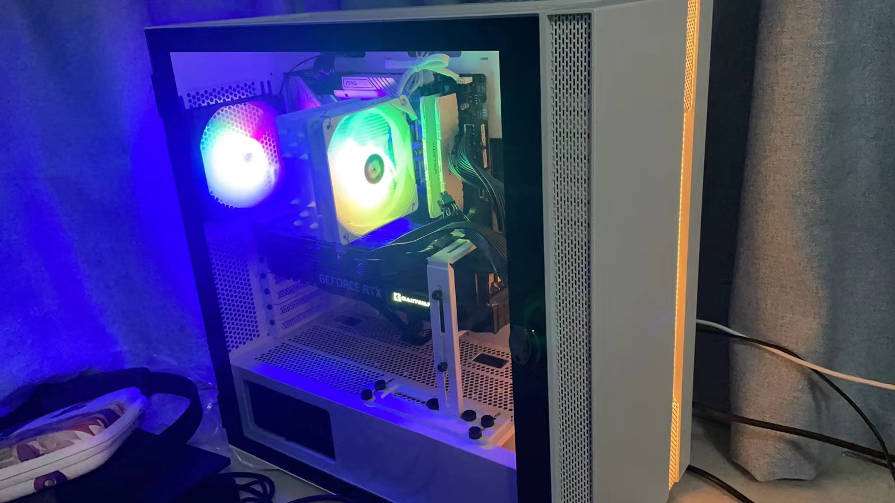

电脑升级计划¶
记录升级电脑时的一些思路。
CPU
Intel 12700F
我的日常其实不太需要一个很好的CPU，但是因为它更适配windows11，并且之前一直在用i5，就当作一次尝试。
主板
MSI 660 MORTAR
自己配电脑以来就一直在用微星，已经成习惯了。
内存
英睿达 16GB×2 白色 3200hz
看到了不要买绿条的说法，买了更好，至少价格和颜值更好的白条，也是一直用的内存条品牌。
电源
酷冷至尊750w金牌全模组
一开始是想买海韵的，后来可能是纠结来纠结去吧。这款大概是平替。
M2 Hard Disk
铠侠 NVMe RC20 1T
已经有了MX500（500GB）和一块英特尔535（120G）,买硬盘的原则也很简单，就是选择固态，永远不选机械.
CPU 散热器
利民 AK120
显卡
耕升 3080 12G
没错这张卡要7499，而且是在最近太容易买到矿卡，就买了这张新出的3080，选择了比较普通的牌子。
机箱
Thermaltake H6 白
显示器
DELL U2720QM
这显示器已经用了5年了，感觉还能再用10年吧完美无缺。
实物图:

Comments
comments powered by Disqus